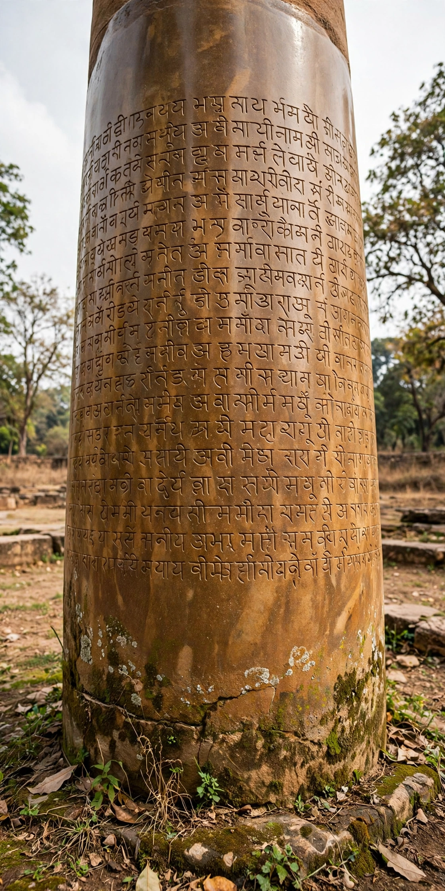

Edicts of Ashoka

Issued by: Ashoka, Mauryan emperor (r. c. 268–232 BCE)
Corpus: Major and Minor Rock Edicts, Pillar Edicts
Languages: Prakrit (Brahmi and Kharoshthi scripts), Greek, Aramaic
Deciphered: 1837 by James Prinsep
The Edicts of Ashoka are a collection of more than thirty inscriptions on rocks and polished stone pillars commissioned by Ashoka, the third Mauryan emperor of India, during the 3rd century BCE. They are the earliest decipherable written records of India, and the first tangible evidence of Buddhism's spread.
Content
Written in the first person as proclamations of "Beloved-of-the-Gods, King Piyadasi" (identified as Ashoka only in 1915 through a minor edict naming him), the edicts expound dhamma — a code of social and moral conduct encompassing obedience to parents, generosity to priests and ascetics, kindness to servants and animals, religious tolerance and truthfulness. The Major Rock Edicts include Ashoka's famous expression of remorse for the conquest of Kalinga, with its hundred thousand slain, which turned him toward Buddhism and non-violence. The edicts record bans on royal hunts and certain animal slaughter, medical planting of herbs, wells dug and trees planted along roads, and officers of dhamma appointed to promote welfare. Frontier edicts appear in Greek and Aramaic, and a bilingual Greek–Aramaic inscription was found at Kandahar.
Distribution and rediscovery
The inscriptions span the empire from Afghanistan to Karnataka and from Gujarat to Bengal. Forgotten after the Mauryan collapse, they were deciphered in 1837 when James Prinsep cracked the Brahmi script, radically transforming knowledge of early Indian history. The Lion Capital of Ashoka's Sarnath pillar became the national emblem of India in 1950, and the Ashoka Chakra appears on the Indian flag.
See also: Ashoka · Maurya Empire